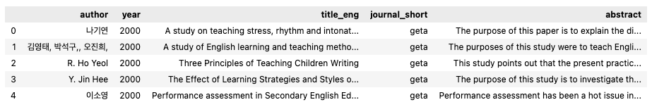
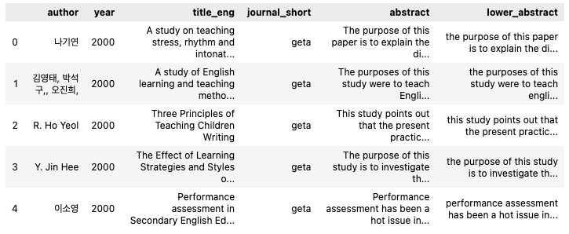
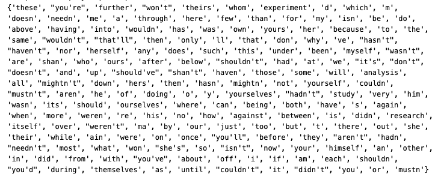
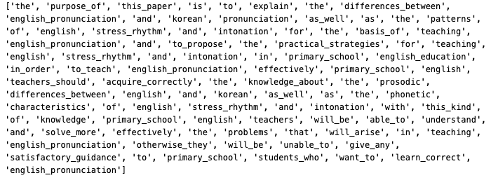
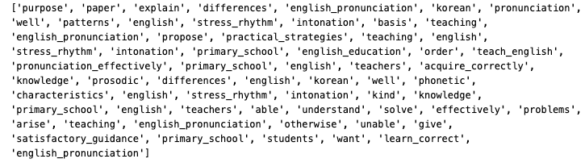
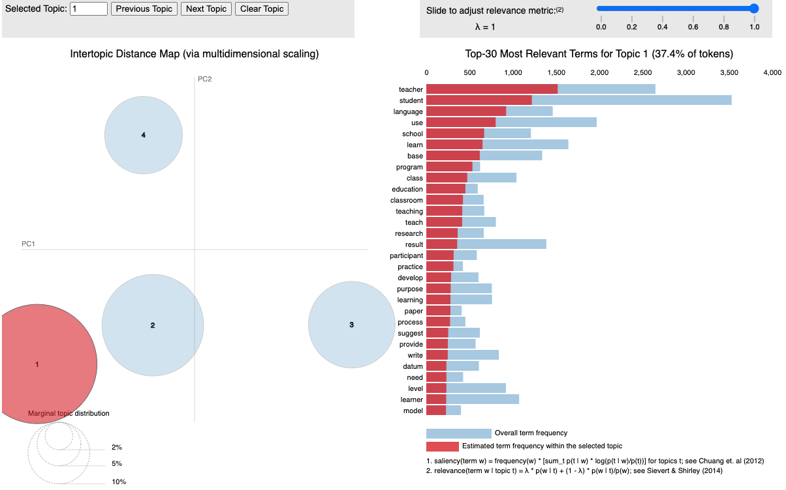
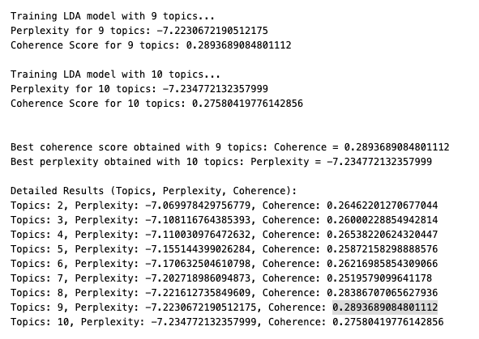

16 Topic Modeling in Python
16.1 Topic Modeling
Topic modeling is a type of statistical modeling used in natural language processing (NLP) and text mining to discover abstract topics that occur within a collection of documents. It helps in organizing, understanding, and summarizing large sets of textual data by identifying patterns of word usage and grouping related words into topics.
16.2 Background
16.2.1 Key Concepts of Topic Modeling
- Documents and Corpus:
- Document: A single piece of text (e.g., an article, a tweet, a book chapter).
- Corpus: A collection of documents.
- Topics:
- A topic is characterized by a distribution of words that frequently occur together. For example, a “sports” topic might include words like “game,” “team,” “score,” and “player.”
- Word Distribution:
- Each topic is represented by a probability distribution over a fixed vocabulary of words.
- Each document is represented by a mixture of topics, indicating the presence and proportion of each topic within the document.
16.2.2 How Topic Modeling Works
- Preprocessing:
- Tokenization: Breaking text into words or tokens.
- Stop-word Removal: Eliminating common words that carry little meaning (e.g., “the,” “and”).
- Stemming/Lemmatization: Reducing words to their base or root form.
- Vectorization: Converting text into numerical representations, such as term frequency-inverse document frequency (TF-IDF).
- Algorithm Application:
- Latent Dirichlet Allocation (LDA): The most popular topic modeling technique. It assumes that documents are a mixture of topics and that each topic is a mixture of words.
- Non-negative Matrix Factorization (NMF): Decomposes the document-term matrix into two lower-dimensional matrices, representing topics and their association with words.
- Latent Semantic Analysis (LSA): Uses singular value decomposition to identify patterns in the relationships between terms and documents.
- Parameter Estimation:
- Determining the number of topics.
- Estimating the probability distributions for topics and words using statistical methods.
- Interpretation:
- Analyzing the top words in each topic to assign meaningful labels.
- Understanding the distribution of topics across the corpus to gain insights.
16.2.3 Common Algorithms
- Latent Dirichlet Allocation (LDA):
- A generative probabilistic model.
- Assumes documents are generated from a mixture of topics, each of which is a distribution over words.
- Widely used due to its effectiveness and interpretability.
- Non-negative Matrix Factorization (NMF):
- Decomposes the document-term matrix into non-negative factors.
- Useful for extracting additive, parts-based representations of data.
- Latent Semantic Analysis (LSA):
- Focuses on capturing the underlying structure in the data by reducing dimensionality.
- Less probabilistic compared to LDA and NMF.
16.2.4 Applications of Topic Modeling
- Information Retrieval: Enhancing search engines by identifying relevant topics.
- Document Classification: Organizing and categorizing large sets of documents.
- Trend Analysis: Monitoring changes in topics over time.
- Recommendation Systems: Suggesting content based on topic similarity.
- Content Summarization: Generating summaries by highlighting key topics.
- Social Media Analysis: Understanding prevalent themes and discussions.
16.2.5 Advantages
- Scalability: Can handle large volumes of text data.
- Unsupervised Learning: Does not require labeled data.
- Discovering Hidden Structures: Reveals underlying themes that may not be immediately apparent.
16.2.6 Challenges
- Choosing the Number of Topics: Selecting the optimal number of topics can be subjective and may require experimentation.
- Interpretability: Topics may sometimes include ambiguous or overlapping words, making them hard to label clearly.
- Quality of Preprocessing: Effective preprocessing is crucial for meaningful topic extraction.
- Scalability with Very Large Corpora: While scalable, extremely large datasets may require significant computational resources.
16.2.7 Tools and Libraries
- Gensim: A Python library for topic modeling, particularly known for its efficient implementation of LDA.
- Scikit-learn: Offers implementations of NMF and LDA for topic modeling.
- MALLET: A Java-based package that provides efficient LDA and other topic modeling tools.
- Topic Modeling Toolkits in R: Such as
topicmodelsandstmpackages.
16.2.8 Example Use Case
Suppose a company has thousands of customer reviews about its products. Topic modeling can help identify common themes, such as “product quality,” “customer service,” “pricing,” and “usability.” By understanding these topics, the company can make informed decisions to improve its offerings and address customer concerns more effectively.
16.3 Python Code
# Importing essential libraries for data analysis
import pandas as pd # pandas is used for data manipulation and analysis
import numpy as np # numpy is used for numerical operations and handling arrays
# Reading data from a CSV file
data = pd.read_csv('data_topicmodeling.csv', encoding='utf-8')
data.head()
pd.read_csv(): This function reads a CSV file and loads it into aDataFrameobject, which can then be manipulated using variouspandasmethods.encoding='utf-8': Specifies the character encoding to handle different types of text correctly. UTF-8 is widely used because it supports a broad range of characters.
16.3.1 Data Preprocessing Techniques
Replacing Empty Cells with NaN
In many datasets, there are empty cells that need to be identified and treated appropriately. An empty cell can be represented by an empty string (''). The code below shows how to replace these empty cells with NaN (Not a Number), which pandas recognizes as a missing value.
# Replace empty cells in the 'abstract' column with NaN
data['abstract'] = data['abstract'].replace('', np.nan)Dropping Rows with NaN Values
# Drop rows where 'abstract' column has NaN values
data.dropna(subset=['abstract'], inplace=True)Applying Lowercase Transformation
# Convert the text in the 'abstract' column to lowercase
data['lower_abstract'] = data['abstract'].apply(lambda x: x.lower())
data.head()
16.3.2 Introduction to Latent Dirichlet Allocation (LDA)
Latent Dirichlet Allocation (LDA) is a popular algorithm used for topic modeling, which uncovers hidden thematic structures in a corpus of text. It works by assuming that each document is a mixture of various topics and that each topic is a mixture of words. Before applying LDA, it is essential to preprocess the text data, including tokenization.
16.3.2.1 Tokenization Using gensim
16.3.2.2 What is Tokenization?
Tokenization is the process of breaking down text into smaller units, known as tokens. These tokens can be words, phrases, or even characters. For LDA, tokenization helps convert text into a format that can be analyzed by the algorithm.
16.3.2.3 Using gensim for Tokenization
gensim is a robust Python library for topic modeling and natural language processing. The gensim.utils.simple_preprocess function provides an effective way to tokenize text.
# Importing the gensim library and simple_preprocess function
import gensim
from gensim.utils import simple_preprocess
# Function to tokenize a list of sentences
def sent_to_words(sentences):
for sentence in sentences:
yield(gensim.utils.simple_preprocess(sentence, deacc=True)) # Tokenizes and removes punctuations with deacc=True16.3.2.4 Inspecting the Preprocessed Text
Before proceeding with tokenization, we review the current state of the preprocessed text data, stored in a column called lower_abstract:
# Extracting the 'lower_abstract' column
lower_abstract = data['lower_abstract']
lower_abstract.head()lower_abstract.head(): Displays the first few entries of thelower_abstractcolumn, showing the lowercase version of theabstracttext data.
# Applying the tokenization function to the 'lower_abstract' column
data['words'] = list(sent_to_words(lower_abstract))
data.head()data['words']: Contains lists of tokens for eachabstract, effectively converting text data into a list of words that can be used for LDA.
# Creating a list of word tokens from the 'lower_abstract' column
data_words = list(sent_to_words(lower_abstract))
# Displaying the first two tokenized entries
data_words[:2]Expected Output:
[['word1', 'word2', 'word3', ...], ['word1', 'word2', 'word3', ...]]16.3.2.5 Removing Stopwords for Effective Text Analysis
Stopwords are common words in a language (e.g., “is”, “the”, “and”) that often carry little meaningful information in the context of text analysis. Removing these words helps improve the efficiency of text processing and enhances the quality of insights drawn from tasks such as topic modeling.
16.3.2.5.1 Importing and Downloading Stopwords with nltk
# Importing the nltk library and downloading the stopwords package
import nltk
nltk.download('stopwords')nltk.download('stopwords'): Downloads the stopwords dataset if it is not already present in your environment.
from nltk.corpus import stopwords
# Creating a custom set of stopwords and adding more words
stop_words_final = set(stopwords.words("english"))
print(stop_words_final)
additional_words = {"study", "research", "analysis", "experiment"} # Add more words here
stop_words_final.update(additional_words)
# Display the final set of stopwords
stop_words_final
print(stop_words_final)stopwords.words("english"): Returns a list of common English stopwords.set(): Converts the list to a set for efficient lookup operations.- Customization: Adding words like
"study"ensures that domain-specific terms that are not useful for the analysis are also removed.
Example Output:

16.3.2.5.2 Why Remove Stopwords?
- Enhances Analysis: Removing stopwords reduces noise in the text data, allowing models to focus on more meaningful words.
- Improves Model Coherence: Reduces the dimensionality of the data and enhances the interpretability of topic models and other NLP algorithms.
16.3.3 Building Bigram Models for Text Analysis
In natural language processing (NLP), a bigram refers to a sequence of two consecutive words in a sentence. Bigrams capture context that single-word tokens (unigrams) might miss, which can be beneficial for tasks such as topic modeling, language modeling, and more.
16.3.3.1 Introduction to gensim’s Phrases Model
gensim provides a Phrases class that can be used to detect and build bigrams in text. The Phrases model identifies word pairs that appear together frequently enough to be treated as a single phrase.
16.3.3.1.1 Key Parameters:
min_count: Ignores all words and bigrams with a total collected count lower than this value. It helps filter out infrequent word pairs.threshold: Sets the score threshold for forming a bigram. A higher threshold results in fewer detected phrases, which ensures only the most significant pairs are identified.
16.3.3.1.2 Formula for Phrasing:
A bigram is accepted if:
\[{(count(a, b) - min\_count) * N / (count(a) * count(b)) > threshold}\]
where (N) is the total vocabulary size.
16.3.3.2 Building and Applying the Bigram Model
The first step is to create a Phrases object to detect word pairs in the tokenized text data.
# Importing the Phrases class from gensim
from gensim.models.phrases import Phrases, Phraser
# Building the bigram model with custom min_count and threshold values
# Ensure data_words is a list of tokenized sentences
# For example: data_words = [['the', 'purpose', 'of', 'this', 'paper'], ['is', 'to', 'explain', ...]]
bigram = gensim.models.Phrases(data_words, min_count=1, threshold=10)min_count=1: Only considers word pairs that appear at least once in the text corpus.threshold=10: A higher threshold results in fewer, more significant bigrams.
16.3.3.3 Creating a Faster Bigram Model Using Phraser
Once the Phrases model is built, it can be converted to a Phraser object, which allows for more efficient transformation of tokenized text.
# Converting the bigram model to a Phraser for efficient use
bigram_mod = Phraser(bigram)16.3.3.4 Applying the Bigram Model
To view the results of the bigram model, apply it to tokenized text data:
# Printing the first tokenized sentence with bigrams
bigram_sentences = [bigram_mod[sentence] for sentence in data_words]
print(bigram_sentences[0])Expected Outcome:
The output shows a list of tokens where frequent word pairs are combined into a single token:

16.3.3.5 Benefits of Using Bigrams:
- Improves Context: Bigrams provide more context than individual words, making text analysis richer and more meaningful.
- Enhances Topic Modeling: Combining common word pairs helps LDA and other models identify topics more accurately.
16.3.4 Defining Custom Functions
16.3.4.1 Function for Removing Stopwords
def remove_stopwords(texts):
return [[word for word in simple_preprocess(str(doc)) if word not in stop_words_final] for doc in texts]- Input: A list of tokenized sentences (
texts). - Process: Iterates through each word in a document and removes those present in the
stop_words_finalset. - Output: A list of tokenized sentences without stopwords.
16.3.4.2 Function for Creating Bigrams
This function applies a pre-trained bigram model to generate bigrams from tokenized sentences.
def make_bigrams(texts):
return [bigram_mod[doc] for doc in texts]- Input: A list of tokenized sentences.
- Process: Uses
bigram_mod, aPhraserobject, to transform sentences and add bigrams where appropriate. - Output: A list of tokenized sentences where frequent word pairs are combined into bigrams.
16.3.4.3 Function for Lemmatization
Lemmatization reduces words to their base or dictionary form, known as the lemma. This helps group different forms of a word (e.g., “running” and “ran”) into a single term (“run”).
def lemmatization(texts, allowed_postags=['NOUN', 'ADJ', 'VERB', 'ADV']):
texts_out = []
for sent in texts:
doc = nlp(" ".join(sent))
texts_out.append([token.lemma_ for token in doc if token.pos_ in allowed_postags])
return texts_out- Input: A list of tokenized sentences and a list of allowed part-of-speech (POS) tags (default is
['NOUN', 'ADJ', 'VERB', 'ADV']). - Process:
- Uses the
spacyNLP pipeline (nlp) to process sentences. - Extracts the lemma of each token if its POS tag matches the allowed POS tags.
- Uses the
- Output: A list of tokenized sentences with words lemmatized and filtered by POS tags.
16.3.5 Step-by-Step Preprocessing Workflow
16.3.5.1 Removing Stopwords
The first step is to remove common stopwords from the tokenized text using the remove_stopwords() function:
# Remove stopwords from the tokenized data
data_noStopWords = remove_stopwords(data_words)data_words: The tokenized text data.data_noStopWords: The output is a list of tokenized sentences with stopwords removed.
16.3.5.2 Forming Bigrams
Next, we apply the make_bigrams() function to create bigrams in the text data:
# Form bigrams from the data without stopwords
data_bgrams = make_bigrams(data_noStopWords)
print(data_bgrams[0])
data_noStopWords: The tokenized sentences without stopwords.data_bgrams: The output is a list of tokenized sentences where common word pairs have been combined into bigrams.
16.3.5.3 Initializing spaCy for Lemmatization
Before performing lemmatization, we need to initialize the spaCy language model. For efficiency, only the tagger component is kept active:
# Initialize spaCy English model with limited components for efficiency
import spacy
nlp = spacy.load("en_core_web_sm", disable=['parser', 'ner'])en_core_web_sm: A lightweight English language model suitable for basic NLP tasks.disable=['parser', 'ner']: Disables the parser and named entity recognition to optimize performance during lemmatization.
16.3.5.4 Lemmatization
The final step is to apply the lemmatization() function, which reduces words to their base forms while keeping only specified parts of speech:
# Perform lemmatization on the bigram data, keeping only nouns and verbs
bgram_lemmatized = lemmatization(data_bgrams, allowed_postags=['NOUN', 'VERB'])data_bgrams: The tokenized sentences with bigrams.allowed_postags=['NOUN', 'VERB']: Filters the tokens to keep only nouns and verbs during lemmatization.bgram_lemmatized: The output is a list of sentences with lemmatized tokens.
print(bgram_lemmatized[0])16.3.6 Transforming Data into Corpus and Dictionary Formats
In order to train topic models such as Latent Dirichlet Allocation (LDA), text data must be converted into a numerical format that represents the words and their frequencies. gensim provides tools for transforming text data into a dictionary and a corpus format, which are essential for topic modeling.
16.3.6.1 Understanding Corpus and Dictionary
- Dictionary: Maps each unique word in the text data to a unique integer ID. This dictionary acts as a reference for word encoding.
- Corpus: Represents the text data in the form of
(word_id, word_frequency)tuples, whereword_idcorresponds to the unique ID from the dictionary andword_frequencyindicates the number of times the word appears in the document.
16.3.6.2 Creating a Dictionary
16.3.6.3 Using gensim to Create a Dictionary
The gensim.corpora.Dictionary class is used to create a dictionary from the preprocessed text data:
# Importing the corpora module from gensim
import gensim.corpora as corpora
# Creating a dictionary from the lemmatized text data
dictionary_bgram = corpora.Dictionary(bgram_lemmatized)corpora.Dictionary(): Takes a list of tokenized sentences and creates a mapping of words to unique integer IDs.bgram_lemmatized: The lemmatized and preprocessed text data.
Example:
print(dictionary_bgram.token2id)The output will display a dictionary with words as keys and their corresponding integer IDs as values.
16.3.7 Creating a Corpus
16.3.7.1 Transforming Text Data into a Corpus
The corpus is created by converting each document into a bag-of-words (BoW) format, where each document is represented as a list of (word_id, word_frequency) tuples.
# Assigning the preprocessed data to a variable for clarity
texts_bgram = bgram_lemmatized
# Creating the corpus using the doc2bow method
corpus_bgram = [dictionary_bgram.doc2bow(text) for text in texts_bgram]doc2bow(): Converts a document (a list of words) into a BoW representation, counting the frequency of each word in the document and returning it as a list of(word_id, word_frequency)tuples.
Example:
# Displaying the first few elements of the corpus
print(texts_bgram[1])
print(corpus_bgram[1:3]) # View the second and third documentstexts_bgram[1]: Displays the list of words in the second document.corpus_bgram[1:3]: Displays the BoW format for the second and third documents, e.g.,[(word_id, frequency), ...].
16.3.7.2 Explanation of the Corpus Format
Each document in the corpus contains tuples where:
word_id: The unique integer ID assigned to the word in the dictionary.word_frequency: The number of times the word appears in the document.
Example interpretation:
[(0, 2), (3, 1), (5, 1)]This output indicates that:
- The word with ID
0appears twice. - The word with ID
3appears once. - The word with ID
5appears once.
16.3.7.3 Benefits of Using Corpus and Dictionary
- Efficient Storage: The BoW format is a sparse representation that saves space.
- Compatibility: Most topic modeling algorithms, including LDA, use a corpus and dictionary as input.
- Flexibility: The dictionary can be further modified to remove low-frequency or high-frequency words, which can help refine the analysis.
16.3.8 Building the Base Topic Model with LDA
16.3.8.1 Important Parameters for Building an LDA Model
When building an LDA model, several parameters influence the outcome and quality of the generated topics:
Number of Topics (num_topics)
k: The number of topics the model should find in the corpus. This parameter requires careful tuning based on the data and the goals of the analysis.- Example:
k = 4, meaning the model will attempt to identify 4 distinct topics.
id2word
id2word: A dictionary that maps word IDs to words (strings). This is crucial for determining vocabulary size and understanding the topics the model generates.- Source: Created from the
gensim.corpora.Dictionaryobject.
Hyperparameters: alpha and eta
alpha(document-topic distribution):- Affects the sparsity of the topic representation within documents.
- A lower value (close to 0) indicates fewer topics per document, while a higher value results in more topics per document.
- Example:
alpha = 1.0/k, making it symmetric across topics.
eta(topic-word distribution):- Affects the sparsity of the word distribution within topics.
- A lower value results in fewer words per topic, while a higher value includes more words per topic.
- Example:
eta = 1.0/k, creating a symmetric distribution.
chunksize
- Controls the number of documents processed at a time during training.
- Impact: A larger
chunksizecan speed up training but requires more memory. - Example:
chunksize=100.
passes
- The number of times the model iterates over the entire corpus (also known as “epochs”).
- Impact: More passes generally improve the model’s quality but increase training time.
- Example:
passes=10.
16.3.9 Building the LDA Model
Below is the code to build an LDA model using gensim’s LdaMulticore class:
# Importing the necessary module
import gensim.models
# Setting parameters for the model
k = 4 # Number of topics
a = 1.0 / k # Alpha value for symmetric topic distribution
b = 1.0 / k # Eta value for symmetric word distribution
# Building the LDA model
lda_model = gensim.models.LdaMulticore(
corpus=corpus_bgram, # Corpus in BoW format
id2word=dictionary_bgram, # Dictionary for word-ID mapping
random_state=100, # Seed for reproducibility
chunksize=100, # Number of documents to process at once
passes=10, # Number of iterations over the entire corpus
num_topics=k, # Number of topics
alpha=a, # Document-topic distribution hyperparameter
eta=b # Topic-word distribution hyperparameter
)gensim.models.LdaMulticore:- Utilizes multiple CPU cores to speed up training.
- Takes
corpusandid2wordas mandatory arguments.
- Hyperparameters:
alphaandetawere set to1.0/kfor a symmetric prior, evenly distributing the importance of topics and words.
random_state:- Ensures reproducibility by seeding the random number generator.
To inspect the topics discovered by the model, use:
# Printing the topics found by the model
for idx, topic in lda_model.print_topics(-1):
print(f"Topic {idx}: {topic}")Example Output:
Topic 0: '0.025*"data" + 0.020*"analysis" + 0.018*"model" + ...'
Topic 1: '0.030*"machine" + 0.025*"learning" + 0.015*"algorithm" + ...'
...16.3.10 Evaluating the LDA Model with Perplexity and Coherence
Evaluating the quality of an LDA model is crucial to ensure that it generates meaningful topics. Two common metrics used for this purpose are Perplexity and Coherence Score.
- Perplexity: Measures how well a model predicts a sample. A lower perplexity score indicates a better generalization of the model to unseen data.
- Coherence Score: Assesses the degree of semantic similarity between high-scoring words in a topic. Higher coherence indicates more interpretable and relevant topics.
16.3.10.1 Code to Compute Perplexity
# Importing the necessary module for CoherenceModel
from gensim.models.coherencemodel import CoherenceModel
# Computing the Perplexity of the LDA model
print('\nPerplexity: ', lda_model.log_perplexity(corpus_bgram))lda_model.log_perplexity(corpus_bgram):- Evaluates the model’s perplexity on the given corpus.
- The lower the perplexity score, the better the model is at predicting unseen data.
Perplexity: -7.123456789 (example value)16.3.11 Computing Coherence Score
The Coherence Score measures the degree of semantic similarity between the high-scoring words in a topic. There are different types of coherence measures, with ‘c_v’ being one of the most commonly used as it correlates well with human interpretation.
16.3.11.1 Code to Compute Coherence Score
# Computing the Coherence Score
coherence_model_lda = CoherenceModel(
model=lda_model,
texts=bgram_lemmatized,
dictionary=dictionary_bgram,
coherence='c_v'
)
coherence_lda = coherence_model_lda.get_coherence()
# Printing the Coherence Score
print('\nCoherence Score: ', coherence_lda)CoherenceModel():- Takes the trained LDA model, the tokenized texts, the dictionary, and the type of coherence measure as inputs.
coherence='c_v': A coherence measure that evaluates the semantic similarity between words.get_coherence():- Computes and returns the coherence score for the model.
- Interpretation: A higher coherence score indicates that the topics are more interpretable and relevant.
Coherence Score: 0.45 (example value)16.3.11.2 Importance of Model Evaluation
- Perplexity:
- While perplexity is a useful metric, it does not always correlate well with human interpretation. It is best used alongside coherence to assess the model’s quality.
- Coherence:
- The coherence score provides a direct indication of how interpretable the topics are. It helps in fine-tuning the model for producing more meaningful and human-readable topics.
16.3.12 Visualizing Topics and Keywords
To better understand the topics generated by an LDA model, visualization tools can be invaluable. PyLDAvis is a popular library that provides an interactive way to examine topics and the associated keywords. This chapter will guide you through setting up PyLDAvis and using it to visualize LDA model results.
16.3.12.1 Installing and Importing PyLDAvis
Ensure that PyLDAvis is installed in your environment:
!pip install pyLDAvisImport the necessary modules:
import pyLDAvis
import pyLDAvis.gensim_models16.3.12.2 Preparing and Displaying the Visualization
To visualize the topics and their key terms, prepare the data using PyLDAvis:
# Enable PyLDAvis to work in a notebook environment
pyLDAvis.enable_notebook()
# Prepare the visualization data
LDAvis_prepared = pyLDAvis.gensim_models.prepare(lda_model, corpus_bgram, dictionary_bgram)
# Save the visualization as an HTML file
pyLDAvis.save_html(LDAvis_prepared, 'lda_model_visualization.html')
# Display the visualization
pyLDAvis.display(LDAvis_prepared)
The PyLDAvis visualization consists of the following components:
- Circles: Represent topics. The size of the circle indicates the proportion of the corpus that the topic covers.
- Distance Between Circles: Indicates how different the topics are from one another. Topics that are more similar are closer together.
- λ (Lambda) Parameter:
- Controls the relevance of the words shown for each topic.
- λ close to 1: Displays more frequently appearing words within each topic.
- λ close to 0: Shows words that distinguish one topic from another.
16.3.12.3 How to Interpret:
- Explore topics by clicking on them to see the most relevant keywords.
- Adjust the λ slider to view words based on their frequency and distinguishing power.
16.3.13 Document-Topic Distribution
Understanding how documents are distributed across topics is essential for interpreting LDA results. The document-topic distribution shows the proportion of each topic within a document, indicating which topics are most prevalent.
16.3.13.1 Extracting Document-Topic Distribution
The following code snippet iterates through the documents in the corpus and prints the topic distribution for each:
# Iterate through the document-topic distribution and print for the first few documents
for i, topic_list in enumerate(lda_model[corpus_bgram]):
if i == 5: # Limit to the first 5 documents for demonstration
break
print(f"{i}th document consists of the following topics (proportions):", topic_list)lda_model[corpus_bgram]:- Applies the trained LDA model to the corpus and returns a list of tuples for each document. Each tuple contains a topic ID and its proportion within the document.
topic_list:- A list of tuples representing the topic distribution in a document. Each tuple follows the format
(topic_id, proportion), whereproportionindicates how much of the document is represented bytopic_id.
- A list of tuples representing the topic distribution in a document. Each tuple follows the format
Example Output:
0th document consists of the following topics (proportions): [(0, 0.25), (2, 0.50), (3, 0.25)]
1th document consists of the following topics (proportions): [(1, 0.60), (2, 0.40)]
...- In the first document, Topic 0 accounts for 25%, Topic 2 for 50%, and Topic 3 for 25% of the content.
- These proportions help identify the dominant topic(s) in each document and how each document contributes to the overall topic model.
16.3.13.2 Use Cases for Document-Topic Distributions
- Topic-Based Document Classification: Documents can be categorized based on the most prevalent topic.
- Content Analysis: Understanding the spread of topics across a corpus helps in content segmentation and thematic analysis.
- Model Refinement: Identifying documents with mixed topics can indicate whether further preprocessing or model tuning is needed.
16.3.13.3 Saving Document-Topic Distributions to CSV
After computing the document-topic distributions, it is often useful to export this data for further analysis or reporting. This chapter will guide you through the process of storing the document-topic distribution as a DataFrame and exporting it to a CSV file for easy access.
# Initialize an empty list to store document-topic distributions
doc_topics = []
# Iterate over each document in the corpus to extract topic proportions
for i, topic_list in enumerate(lda_model[corpus_bgram]):
doc_topics.append(topic_list)
# Convert the list of document-topic distributions to a DataFrame
lda_model_topics = pd.DataFrame(doc_topics)
# Export the DataFrame to a CSV file
lda_model_topics.to_csv('doc_topics.csv', index=False)
# Display the DataFrame to verify the results
lda_model_topicsdoc_topics.append(topic_list): Appends the topic distribution of each document as a list of tuples todoc_topics.pd.DataFrame(doc_topics): Converts the list of topic distributions into a Pandas DataFrame.to_csv('doc_topics.csv'): Exports the DataFrame to a CSV file nameddoc_topics.csvfor further analysis.
16.3.13.4 Structure of the CSV File:
The CSV file will have the following structure: - Each row represents a document. - Each cell contains a tuple (topic_id, proportion) indicating the proportion of the document assigned to that topic.
Example CSV Output:
| Document | Topic 0 | Topic 1 | Topic 2 | … |
|---|---|---|---|---|
| 0 | (0, 0.25) | (1, 0.50) | (3, 0.25) | … |
| 1 | (1, 0.60) | (2, 0.40) | NaN | … |
| 2 | (0, 0.15) | (1, 0.35) | (3, 0.50) | … |
16.3.13.5 Benefits of Saving Document-Topic Distributions
- Further Analysis: The exported CSV can be used in various data analysis tools or software for deeper examination.
- Reporting and Visualization: The CSV format makes it easy to create visual reports and dashboards.
- Integration with Other Applications: Data stored in CSV format can be used for integrations with business intelligence tools like Tableau or Power BI.
16.4 Python code that calculates perplexity and coherence scores for different topic numbers
Below is Python code that calculates perplexity and coherence scores for different topic numbers between specified limits a and b. This code helps identify the topic number with the best scores:
import gensim
from gensim.models.coherencemodel import CoherenceModel
# Function to compute perplexity and coherence for different numbers of topics
def evaluate_topic_models(corpus, dictionary, texts, start, end):
results = []
for k in range(start, end + 1):
print(f"Training LDA model with {k} topics...")
# Set alpha and eta to be symmetric for simplicity
alpha = 1.0 / k
eta = 1.0 / k
# Build LDA model
lda_model = gensim.models.LdaMulticore(
corpus=corpus,
id2word=dictionary,
num_topics=k,
random_state=100,
chunksize=100,
passes=10,
alpha=alpha,
eta=eta
)
# Calculate perplexity
perplexity = lda_model.log_perplexity(corpus)
print(f"Perplexity for {k} topics: {perplexity}")
# Calculate coherence score
coherence_model_lda = CoherenceModel(
model=lda_model,
texts=texts,
dictionary=dictionary,
coherence='c_v'
)
coherence = coherence_model_lda.get_coherence()
print(f"Coherence Score for {k} topics: {coherence}\n")
# Append results
results.append((k, perplexity, coherence))
return results
# Set the range for the number of topics
a = 2 # Minimum number of topics
b = 10 # Maximum number of topics
# Run the evaluation
results = evaluate_topic_models(corpus_bgram, dictionary_bgram, bgram_lemmatized, a, b)
# Find the best number of topics based on coherence and perplexity
best_coherence = max(results, key=lambda x: x[2])
best_perplexity = min(results, key=lambda x: x[1])
print(f"\nBest coherence score obtained with {best_coherence[0]} topics: Coherence = {best_coherence[2]}")
print(f"Best perplexity obtained with {best_perplexity[0]} topics: Perplexity = {best_perplexity[1]}")
# Print all results for comparison
print("\nDetailed Results (Topics, Perplexity, Coherence):")
for res in results:
print(f"Topics: {res[0]}, Perplexity: {res[1]}, Coherence: {res[2]}")evaluate_topic_models(): A function that trains LDA models for each number of topics betweenstartandendand calculates both perplexity and coherence scores.- Parameters:
corpus: The bag-of-words corpus.dictionary: Thegensimdictionary object.texts: The tokenized, preprocessed texts.start,end: The range for the number of topics (k).
- Output:
- A list of tuples containing
(number of topics, perplexity, coherence score). - The best number of topics based on maximum coherence and minimum perplexity is printed.
- A list of tuples containing
- Key Metrics:
- Perplexity: Lower values are better.
- Coherence: Higher values are better.
This code allows you to identify the topic number that optimizes both perplexity and coherence for your dataset.
Example Output:
